Short videos with voice-over and subtitles. Click play, or open a video in Google Drive to watch it full screen.
Getting started 1:22
Sign in, the dashboard, search, My Work and the calendar.
Open in Google Drivehttps://drive.google.com/file/d/1p0GOAbTQM5rJmtumwjvOvkaiDkKjqqZs/view?usp=sharing
Working with items 1:25
Add an item, assign people, move it through stages, comment, share a link, full screen.
Open in Google Drivehttps://drive.google.com/file/d/1x4-5Khg69a8Eap-GP_x1pUWyY_jsDN1M/view?usp=sharing
Filters, sorting and reports 0:52
Sort and filter a section and export a report.
Open in Google Drivehttps://drive.google.com/file/d/1KMewwVh-0uxaG5pGuhmDPRPSHLOIX1wT/view?usp=sharing
For section managers 1:04
Customize columns, team performance, calendars and dashboard reports.
Open in Google Drivehttps://drive.google.com/file/d/1xgY_SuFE87hrDAehZ_zMF1ZqglcWy7Dl/view?usp=sharing
For super admins 1:00
Users, access levels and sections.
Open in Google Drivehttps://drive.google.com/file/d/1pXKX7fMlPotWcf5XEPdH3NHIHlYez0B9/view?usp=sharing
Full guide (all five parts) 5:44
Everything above in one video.
Open in Google Drivehttps://drive.google.com/file/d/1YoClpq_5nF7vRe8OGtArs23vrlz2AKPI/view?usp=sharing
1About Project Hub
Project Hub is the company’s workspace for RFQs and tenders, projects, project tasks, and payment and claims. Everything lives in sections. Each section is a list of items (an RFQ, a project, a task, a claim) that moves through stages on a board.
What you can see and do depends on the access the super admin gives you in each section, and on the items you are named on. This guide covers everyone first, then the extra tools for section managers and super admins.
1.1 Words used in this guide
Term
Meaning
Section
A module such as RFQ & Tender or Payment & Claims. Super admins add and remove sections.
Item
One record in a section: an RFQ, a project, a task or a claim.
Stage
Where an item is in the process, for example To Do, Pending or Tender Submitted. Stages are the columns on the board.
Deadline
The date column that drives late alerts and the calendar, such as Closing date & time or Due date.
Editors
People who may change an item, even without access to the whole section.
Collaborators
People who may see an item and comment on it.
Waiting
An item that has stayed in a stage longer than the section allows, for example more than 1 day in To Do.
1.2 Access levels
The super admin sets one access level per person per section.
Level
What it allows in that section
No access
The section is hidden. The person still sees items where they are an editor or collaborator.
Viewer
See every item.
Contributor
Add items, and change the items they are an editor on. Items they add make them an editor automatically.
Editor
Change and delete any item.
Manager
Everything an editor can do, plus change the section’s columns, export reports, see team performance and other people’s calendars for the section.
Super admin
Full access to every section, plus user accounts, access levels and sections. Fixed to three accounts.
2Getting started
2.1 Signing in
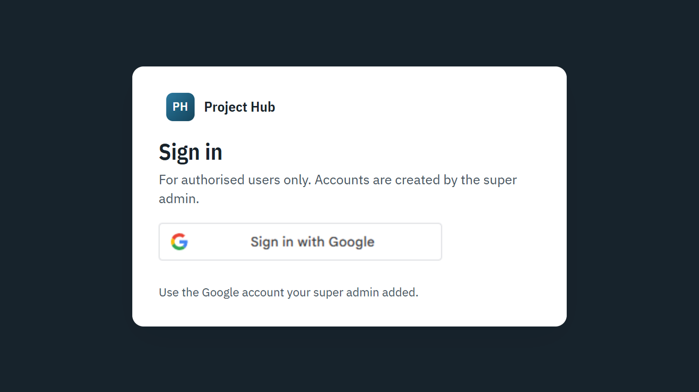
The sign-in page. Only Google accounts added by a super admin can sign in.
Open https://asana-sec.github.io/project-hub/ in Chrome, Edge or Safari.
Click Sign in with Google and choose the Google account your super admin added.
You land on the dashboard. Your browser keeps you signed in for about an hour at a time; sign in again when asked.
Note If you see “does not have access to Project Hub”, your Google account has not been added yet, or you picked a different account. Ask a super admin.
2.2 Finding your way around
Search (top left, or Ctrl + K) finds any item you can open.
Dashboard summarises the sections shared with you.
My Work lists everything you are named on, by due date.
Calendar shows deadlines by month, week or as an agenda.
Team performance appears for section managers and super admins.
Sections lists every section you can open. Super admin tools appear at the bottom for super admins.
Help at the bottom left opens this guide. Refresh loads teammates’ latest changes; the page also refreshes by itself every 90 seconds.
2.3 The dashboard
Dashboard: one card per section you can open, then what needs attention and your own open work.
Each section card shows open items, late items (past their deadline) and waiting items (too long in a stage), the open value, and a bar of items by stage. Click a card to open the section.
Needs attention lists late and waiting items across your sections, most urgent first. Red is urgent; amber is worth watching.
My open work lists the items you are an editor, collaborator or named person on, soonest deadline first.
Tip The dashboard only counts sections you have access to. Items you are named on in other sections still appear under My open work.
3Finding things
3.1 Global search
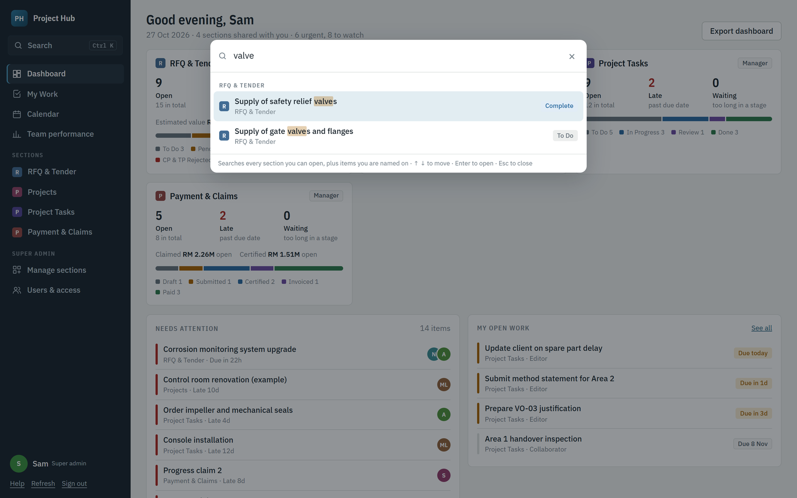
Search across every section you can open. Matching words are highlighted.
Click Search at the top left, or press Ctrl + K (or /) anywhere.
Type a few words: an RFQ number, a client, a person’s name, a stage or words from a comment.
Use ↑ and ↓ to move, Enter to open, Esc to close.
Tip Every word must match, so add words to narrow the list. Short words such as “b” only match the start of a word, so “client b” finds Client B.
3.2 My Work
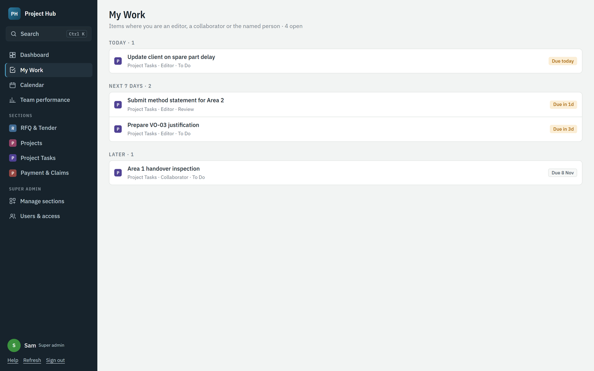
My Work groups your open items into Late, Today, Next 7 days, Later and No due date.
Your role on each item is shown under its title: Editor, Collaborator or the column that names you (for example Project manager).
3.3 Calendar
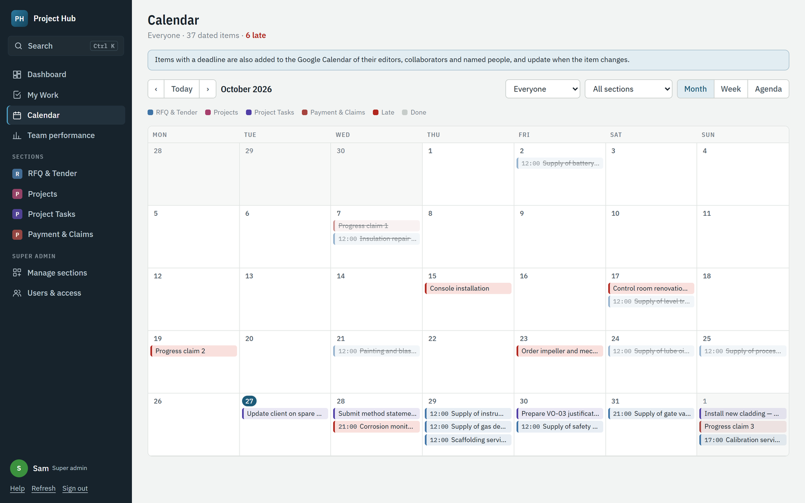
Calendar in month view. Colours follow sections; late items are red; done items are struck through.
Switch between Month, Week and Agenda. Use ‹ Today › to move.
Filter by section with All sections.
Items with a time (for example a closing time) show the time; date-only deadlines show as all-day.
Items you are named on are also added to your own Google Calendar automatically and update when the item changes. The event includes a link back to the item.
4Working with items
4.1 Board and table
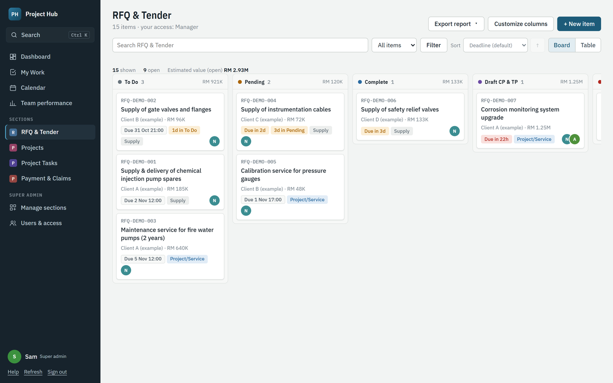
A section board. Drag a card to another column to change its stage.
Each card shows its number, title, key details, deadline and alerts such as Due in 2d or 1d in To Do, and the editors’ initials.
Drag a card to another column to move it to that stage. The move is recorded in the item’s activity.
Switch to Table to see every column. Click a column heading to sort by it; totals appear at the bottom.
Use All items / Only mine to see only items you are named on.
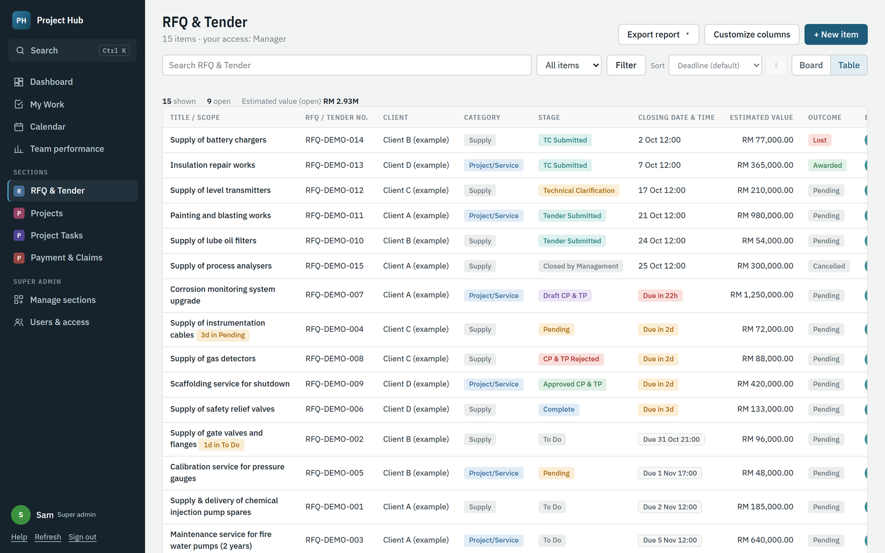
Table view with every column and totals.
4.2 Adding an item
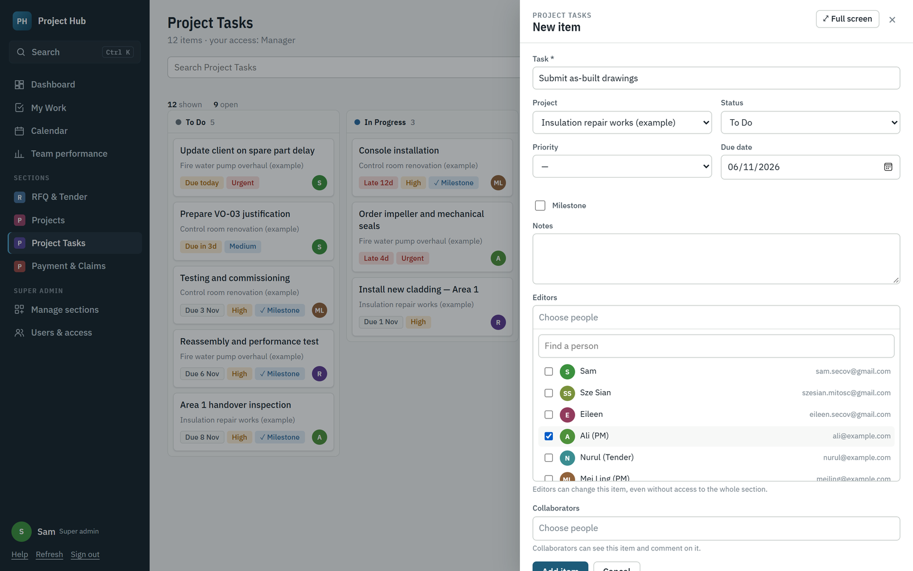
New item form. Choose editors and collaborators at the bottom.
Open the section and click + New item (you need Contributor access or above).
Fill in the columns. Fields marked * are required.
Under Editors, tick the people who will work on it. Under Collaborators, tick people who should follow it.
Click Add item.
4.3 Opening and changing an item
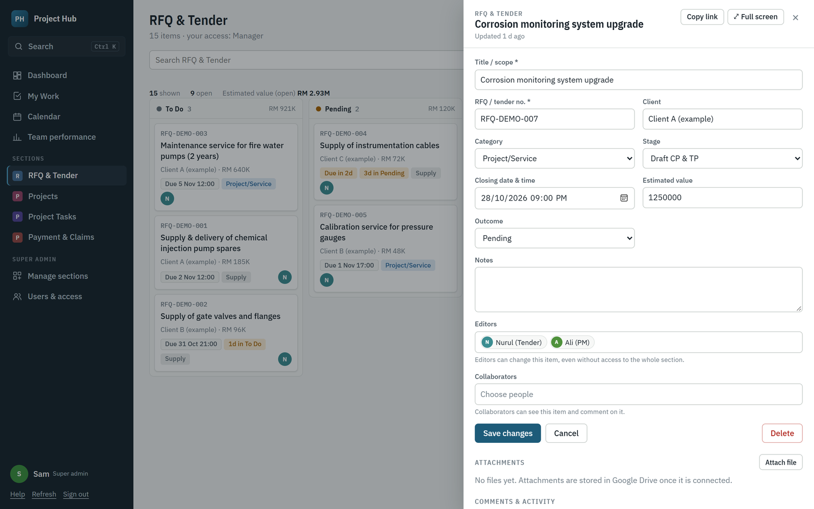
An item opens in a side panel: details on top, then linked items, attachments and comments.
Click any card or row to open it. Change the fields and click Save changes.
If you can only view it, the fields are greyed out and the panel says so.
Attach file stores quotations, drawings or certificates in the company’s Google Drive (up to 20 MB each). Click a file name to download it.
Comments & activity shows the conversation and every stage change. Write in the box and click Post comment.
Linked items appear in the panel too. For example, a project lists its tasks and claims with totals, and + Add creates a new one already linked.
4.4 Sharing a link to an item
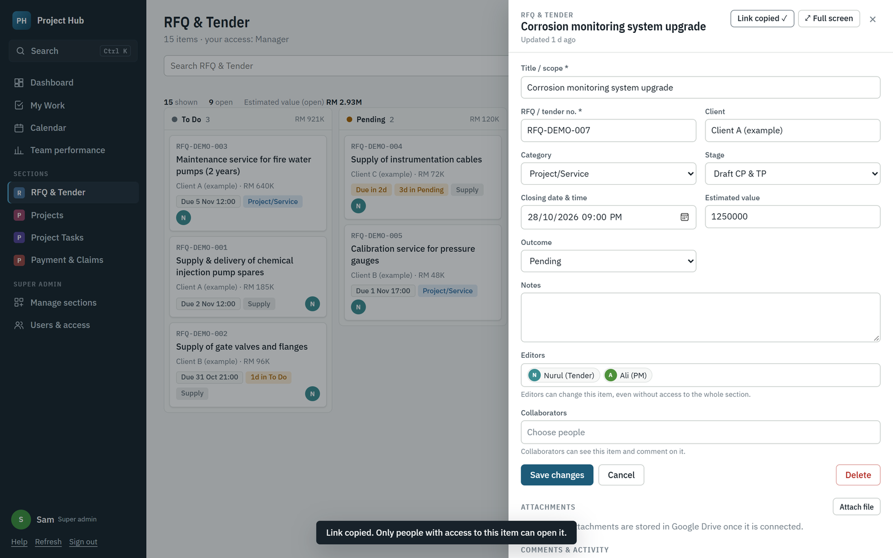
Copy link puts a direct link to the item on your clipboard.
Open the item and click Copy link.
Paste the link into WhatsApp, email or a chat.
The person opening it signs in and the item opens full screen. Only people with access to the item can open it.
Tip To give someone access to one item without opening the whole section, add them as an editor or collaborator, then send the link.
4.5 Full screen
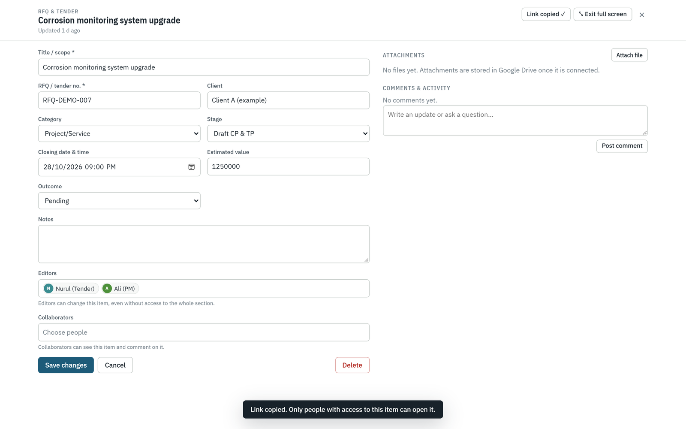
Full screen: fields on the left, attachments and comments on the right.
Click ⤢ Full screen in the item panel to use the whole window, and ⤡ Exit full screen to go back. What you have typed is kept, and Project Hub remembers your choice next time.
4.6 Deleting an item
Section editors, managers and super admins see Delete at the bottom of the item. Click it, then click Click again to delete to confirm. Deleting also removes the item’s calendar event.
5Filters, sorting and reports
5.1 Filtering and sorting a section
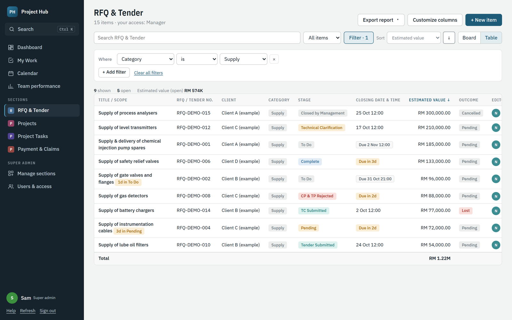
Category is Supply, sorted by estimated value from highest to lowest.
Click Filter. Choose a column, a condition and a value, for example Stage is Pending.
Click + Add filter for more conditions. All conditions must match.
Under Sort, choose a column and use the arrow to switch between ascending and descending.
Click Clear all filters to start again.
Useful conditions include is overdue, is in the next 7 days, is this month, Editors includes me and is empty. Project Hub remembers your filters and sort for each section on your computer.
5.2 Exporting a section report (managers and super admins)
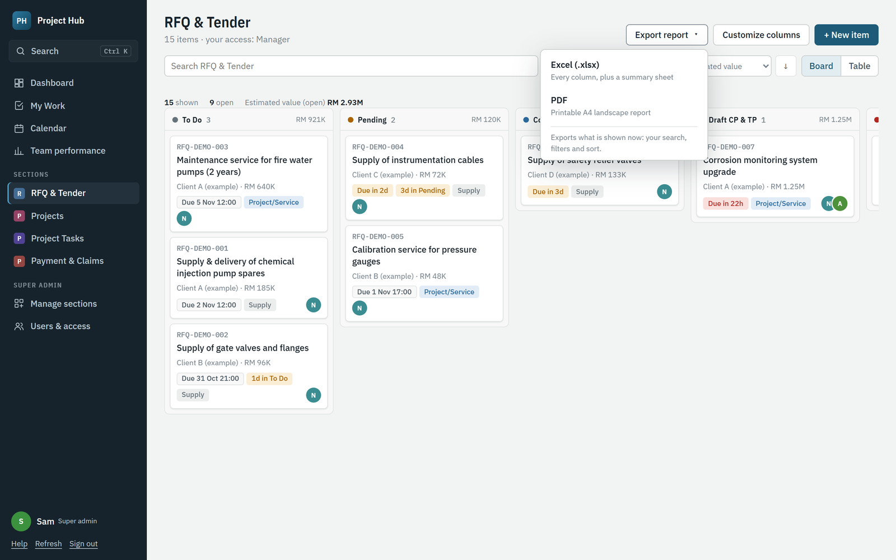
Export report offers Excel or PDF.
Filter and sort the section the way you want the report.
Click Export report and choose Excel (.xlsx) or PDF.
The file downloads. Excel has every column on an Items sheet and a Summary sheet with totals by stage. The PDF is an A4 landscape report with a summary, the item list and red alerts.
Tip If the data contains Chinese characters, the PDF opens your browser’s print window instead. Choose Save as PDF there.
6For section managers
6.1 Customizing columns
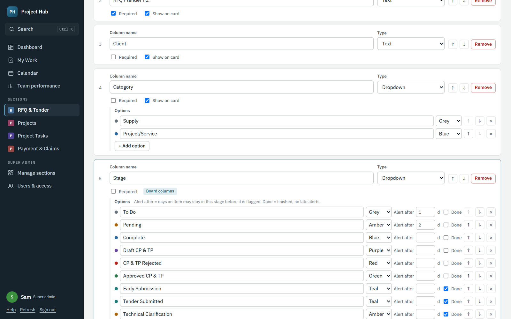
Customize columns: rename, add, remove and reorder columns, and set up stages.
Open your section and click Customize columns.
Rename a column by typing over its name. Change its Type if needed.
Click + Add column for a new one, ↑ ↓ to reorder, and Remove (then Click again) to delete one.
For dropdowns, add, rename, colour and reorder the options.
Click Save columns. The change applies to everyone at once.
Column type
Use it for
Text / Long text
Numbers like RFQ no., client names, notes.
Number / Amount (RM) / Percent
Quantities, values and progress. Tick Show totals to add them up.
Date / Date & time
Deadlines and milestones. Tick Deadline to drive late alerts and the calendar.
Dropdown
Fixed choices such as Category or Health. One dropdown is used for the board columns.
Person
One named owner, such as Project manager.
Tick box
Yes/no, such as Milestone.
Link to another section
Connect items, such as a claim to its project.
Web link
A link to a folder or a portal.
For the stage dropdown, Alert after sets how many days an item may stay in that stage before it shows as waiting (amber, then red at twice the time). Tick Done for finished stages; done items get no late alerts and count as completed.
Tip Removing a column only hides it. Values already entered stay in the Google Sheet, so you can add the column back.
6.2 Team performance
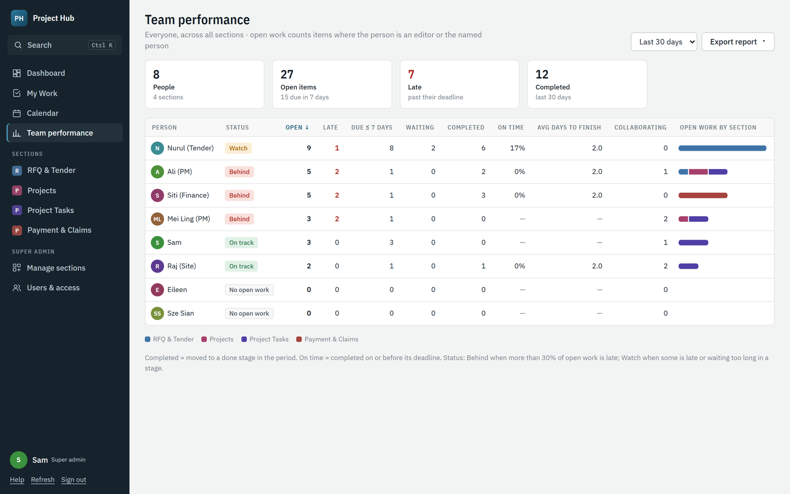
Team performance: workload and completion per person, with open work split by section.
Column
Meaning
Open
Unfinished items where the person is an editor or the named person.
Late
Open items past their deadline.
Due ≤ 7 days
Open items due in the next week.
Waiting
Open items that have stayed too long in a stage.
Completed
Items moved to a done stage in the chosen period.
On time
Share of completed items finished on or before their deadline.
Avg days to finish
Average days from creation to completion.
Collaborating
Open items where the person is a collaborator (not counted as workload).
Status
Behind when more than 30% of open work is late; Watch when some is late or waiting.
Managers see the people on the sections they manage, counting only those sections, and never super admins. Super admins see everyone across all sections. Choose the period at the top right, click a heading to sort, and click Calendar to open that person’s calendar. Export report downloads Excel or PDF.
6.3 Viewing a team member’s calendar
In Calendar, managers get a picker: My calendar, Everyone in the sections I manage, or one person. Only items in the sections you manage are shown.
6.4 Exporting the dashboard
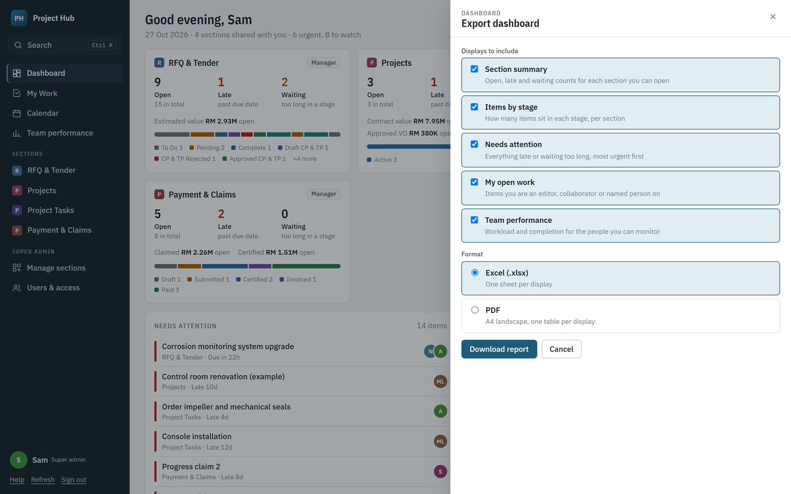
Pick the dashboard displays to include and the format.
On the dashboard, click Export dashboard.
Tick the displays you want: section summary, items by stage, needs attention, my open work, team performance.
Choose Excel (one sheet per display) or PDF, then Download report.
7For super admins
The three super admin accounts are sam.secov@gmail.com, szesian.mitosc@gmail.com and eileen.secov@gmail.com. They cannot be switched off, deleted or given less access.
7.1 Users and access
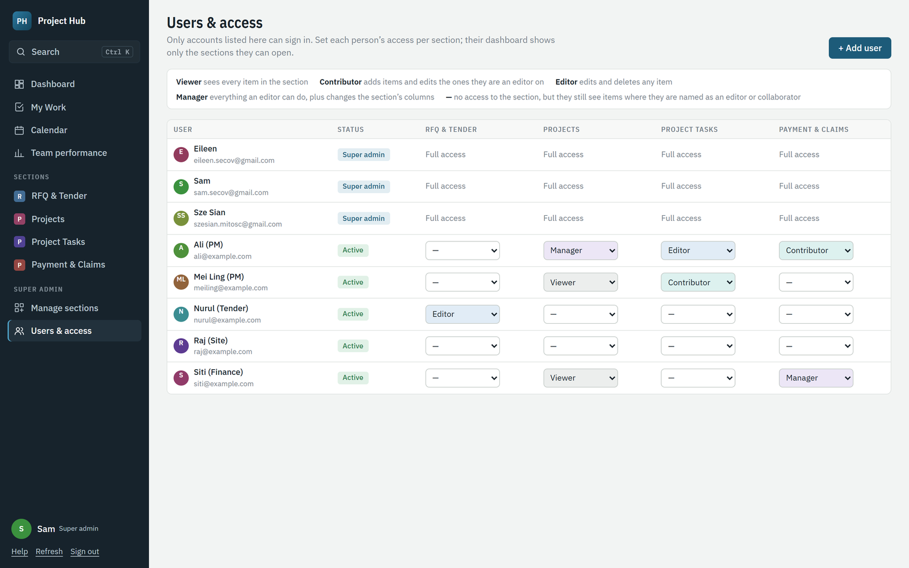
Users & access: one row per person, one column per section.
Change a person’s level for a section directly in the grid. It saves at once.
Click a name to rename the person, switch their sign-in off, or delete them.
7.2 Adding a user
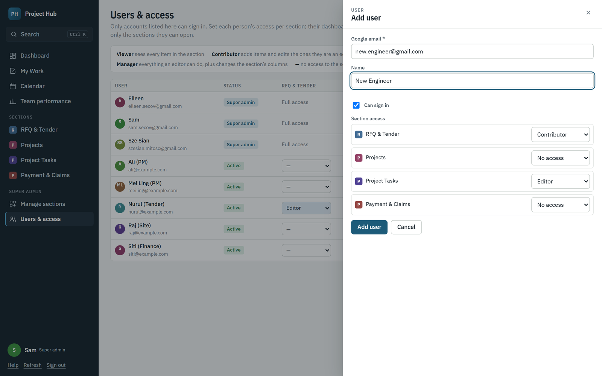
Add the person’s Google email and set their access for each section.
Open Users & access and click + Add user.
Enter the person’s Google email (Gmail or company Google account). The name is optional; it fills in from Google at first sign-in.
Set their access for each section, then click Add user.
Send them the Project Hub address. They sign in with that Google account.
7.3 Managing sections
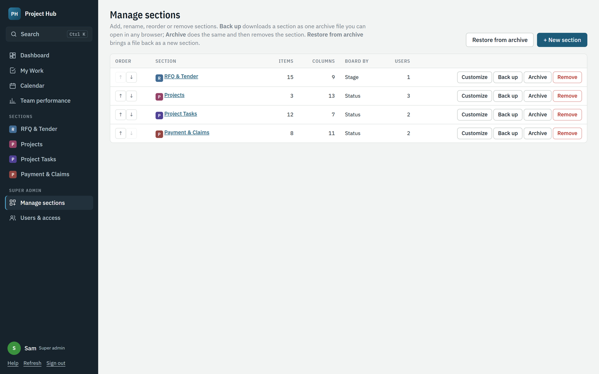
Manage sections: reorder, customize or remove sections, and restore removed ones.
Use ↑ ↓ to change the order in the sidebar.
Remove hides a section from everyone. Its data stays in the Google Sheet and Restore brings it back.
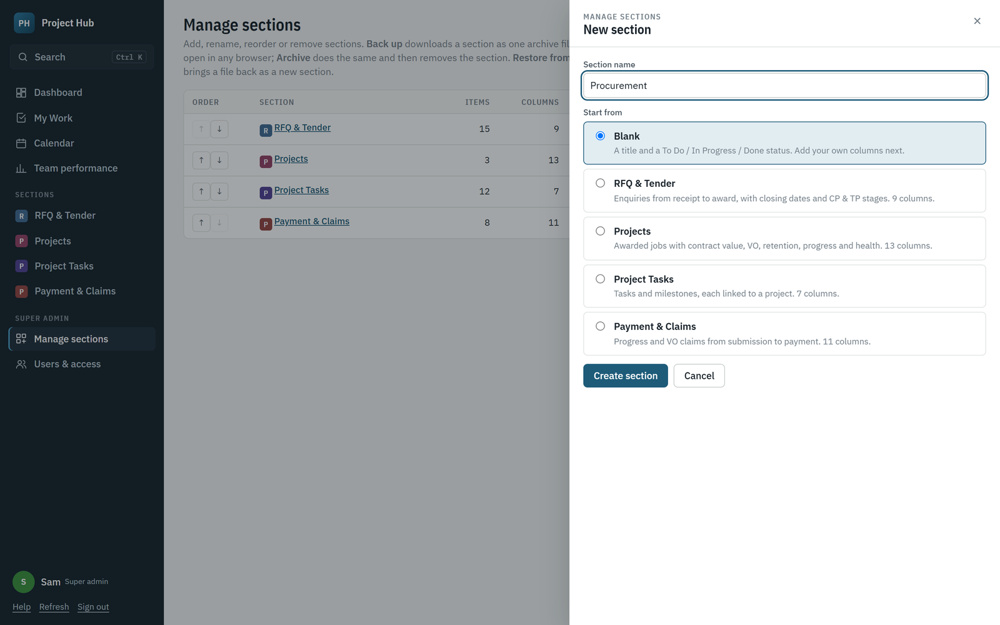
New section: start blank or from a template.
Click + New section and type a name, for example Procurement.
Start from Blank or a template (RFQ & Tender, Projects, Project Tasks, Payment & Claims).
Click Create section, adjust its columns, then give people access under Users & access.
7.4 Archiving, backing up and restoring a section
Super admins can save any section as one archive file, keep it outside Project Hub, and bring it back later. The file holds the section’s columns and stages, every item, comments and activity, editors and collaborators, people’s access, and the list of attachments.
Back up downloads the archive file. The section stays as it is.
Archive downloads the file and then removes the section for everyone. Its data also stays in the Google Sheet, and Restore in the Removed list brings it back.
Restore from archive uploads a file and creates a new section from it. Existing sections are never changed.
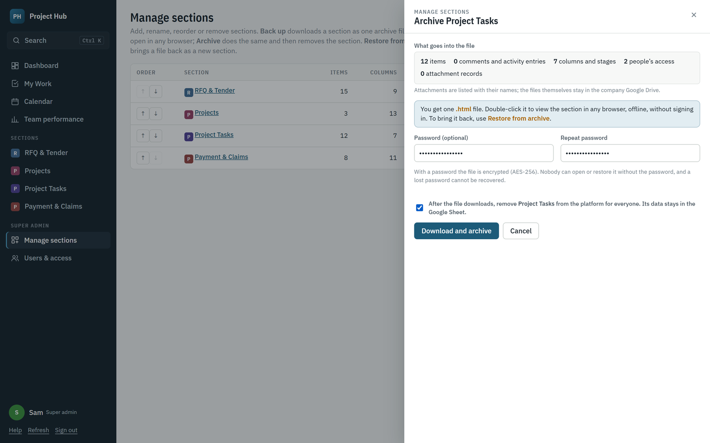
Archive a section: optional password, and a tick to confirm removal.
Open Manage sections and click Back up or Archive next to the section.
Optionally set a password. The file is then encrypted (AES-256) and cannot be opened or restored without it.
For Archive, tick the confirmation box. Click Download backup or Download and archive.
Keep the .html file somewhere safe, such as a company Google Drive folder.
Note A lost password cannot be recovered. Keep it with the file’s owner or in the company password manager.
7.5 Opening an archive file outside Project Hub
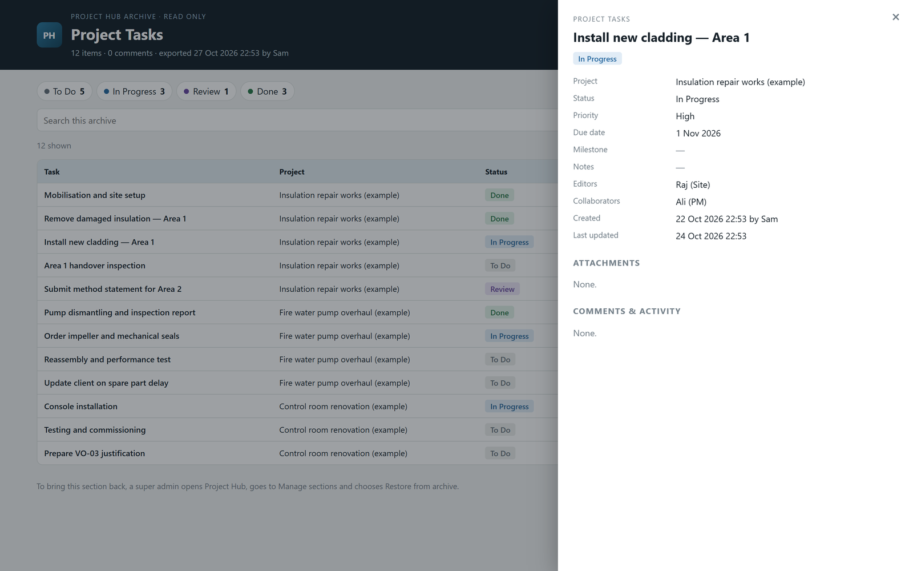
An archive file opened in a browser: search, filter by stage, click a row for full details.
Double-click the archive file. It opens in any browser, offline and without signing in, read only. Enter the password if it has one. Search, filter by stage and click any row to see every field, the people, attachments and the full comment history. Download CSV gives a spreadsheet; Print prints the list.
7.6 Restoring an archive
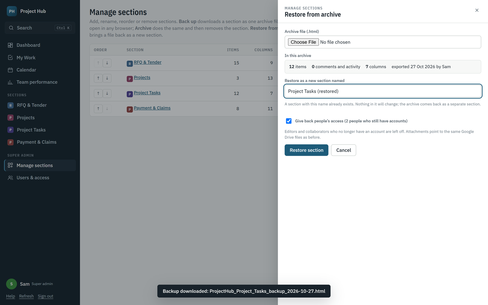
Restore from archive: choose the file, check what is in it, name the new section.
Open Manage sections and click Restore from archive.
Choose the archive file, and enter its password if it has one.
Check the summary and the name. If the name is already used, “(restored)” is added; you can change it.
Leave Give back people’s access ticked to restore everyone’s access level, then click Restore section.
Tip Editors and collaborators whose accounts were deleted are left off. Attachments point to the same Google Drive files as before.
7.7 Google Calendar
Items with a deadline become events in the “Project Hub” calendar of the account that runs the backend, with the item’s editors, collaborators and named people as guests. After many changes at once, open Calendar and click Re-sync Google Calendar.
8Questions and fixes
Problem
What to do
“does not have access to Project Hub”
Your Google account is not on the list, or you chose another account. Ask a super admin to add the exact email.
I cannot see a section
You have no access to it. Ask a super admin. You can still see items you are named on, under My Work.
A shared link says I cannot open the item
You are not on the item or its section. Ask a section manager or an editor to add you as a collaborator.
The page looks old after an update
Press Ctrl + Shift + R to reload the latest version.
A deadline does not show in my Google Calendar
In Google Calendar settings, under Event settings, set “Add invitations to my calendar” to “From everyone”.
The PDF report opened a print window
The data has Chinese characters. Choose Save as PDF in that window.
My file will not attach
Files must be 20 MB or smaller.
I changed something by mistake
Change it back and save. A super admin can also restore older values from the Google Sheet’s version history.